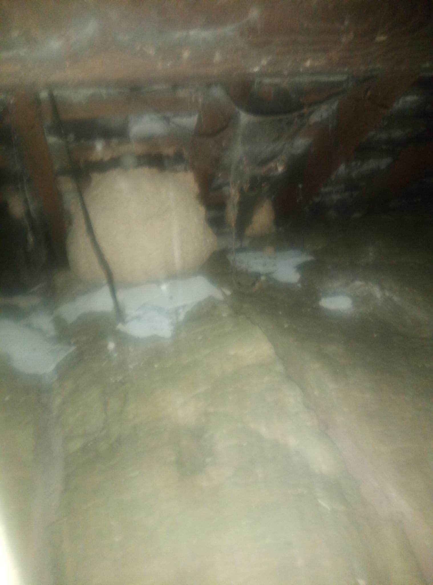

Expert Wasp Nest Removal Services
Are you dealing with a wasp infestation? Our wasp nest removal service in Neath and Surrounding Areas provides effective solutions to eliminate these pests quickly and safely. Whether you're searching for wasp control near me or need assistance with hornet nest removal, our trained professionals are here to help.
We specialize in:
- Wasp Nest Removal - Quick and safe removal of nests.
- Wasp Nest Disposal - Environmentally responsible disposal of wasp nests.
- Eliminating Wasp Nests - Comprehensive strategies to eradicate wasps.
- Wasp Exterminator Services - Professional extermination of wasp populations.
- Pest Management - Long-term solutions to prevent future infestations.
Why Choose Us?
Our wasp removal services are designed with your safety and satisfaction in mind. We understand the importance of protecting your home and family from wasps, and we use the latest techniques and products to ensure effective results.
Protect Your Property Today!
For reliable wasp nest removal, call us at 07375 303124 or email us at Email Me. We offer free consultations to discuss your pest control needs.
Bees: Important Pollinators
While bees are essential for our ecosystem, they can sometimes be found in inconvenient places. It's important to note that bees cannot be killed unless under certain circumstances, as they play a crucial role in pollination and maintaining biodiversity. These incredible insects are responsible for pollinating a large portion of the food we consume, including fruits, vegetables, and nuts.
If you have a bee hive on your property, we offer safe hive relocation services to move the hive without harming the bees. Our trained professionals will assess the situation and ensure that the bees are safely relocated to a suitable environment. We understand that bees are vital to our environment, and our goal is to protect them while providing a solution that keeps your property safe and comfortable.
In addition to hive relocation, we also provide guidance on how to coexist with bees and prevent them from nesting in undesirable locations. For more information on bee relocation or if you require wasp removal services, please contact us or visit our Bee Relocation page for detailed information on our services.
The Importance of Professional Wasp Control
Attempting to remove a wasp nest on your own can be dangerous. Our trained technicians use protective gear and follow safety protocols to safely eliminate the nest, minimizing the risk of stings and potential allergic reactions.
Let us handle your wasp problems efficiently. Contact us for professional wasp control services!
